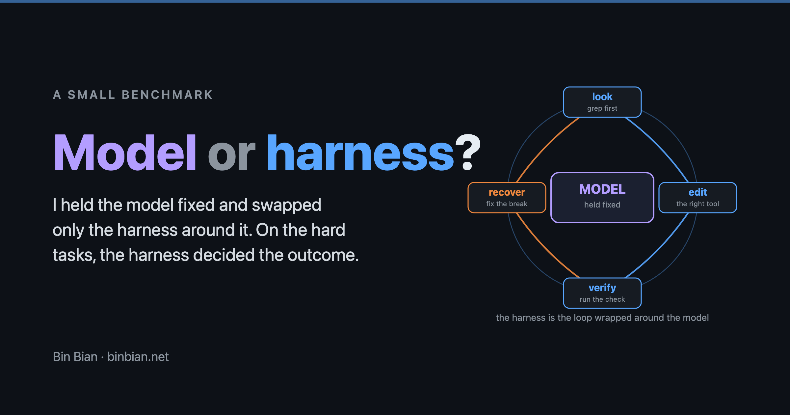

Kevin (Bin) Bian
Senior Electrical Engineer — MV/HV Power Systems · BESS · Grid Connection
Sydney, NSW · 12+ years across cable, substation interface, BESS, and critical infrastructure.
Engineering
12+ yearsindustry experience
Sydney NSWAU work rights
5+ BESSup to 500 MW
CYMCAP · CDEGS · EMTPcable + earthing tooling
PhDElectrical Engineering
Software & AI
M.IT (2024)Information Technology · UniSA
EmptyOSAI operating system
Python · FastAPI · Reactfull-stack
Also building AI tools and writing about AI coding agents + systems design — essays below ↓

Featured
AI coding agents: is the model or the harness the bottleneck?
I held the model fixed and swapped the harness around it across a 12-task suite. On easy tasks it barely mattered; on hard, structured tasks the harness decided the outcome. Plus the first results I got wrong and had to correct.
Recent Posts

Notes as Infrastructure: the emergence of the markdown OS
In systems design we separate data from logic. Under AI, a markdown vault collapses that distinction — the same notes become knowledge, policy, and runtime in three layers.

A Healthy Relationship with My AI Coding Agent: Use It, Abuse It, Outlive It
I'm crazy in love with my AI coding agent. We spend every day together and we've built things I couldn't have built alone. But like any intense relationship, a quiet question eventually shows up: am I leaning too hard? Three stages of a healthy relationship with the coding agent — use it, abuse it, outlive it — and the surprising architecture you end up with when 94% of what was built doesn't, itself, need AI to run.

The Harness and the Model: Why the 'Vibe' Defines the 'Code'
Same model, same prompt, same day — two AI coding tools produced dramatically different apps. The lesson isn't about the model. It's about everything around the model.

Your notes folder is the operating system, and AI is the engine
Notes are evolving from passive storage into an AI-powered system that surfaces insights, while leaving decisions to the user.
Using BPMN to Design and Coordinate AI Agent Workflows
How BPMN can serve as a blueprint for coordinating multiple AI agents, demonstrated through an emergency response triage system.
Exploring ChatGPT 4o's New Image Generation from an Engineer's Perspective
Testing ChatGPT-4o's image generation for both creative storytelling and engineering applications \u2014 fantastic for art, but not yet functional for precise technical illustrations.
Creating a Noting System with AI in 1 Hour – No Coding
An experiment building a fully functional note-taking system using ChatGPT and Claude AI tools\u2014all within one hour and without traditional coding.